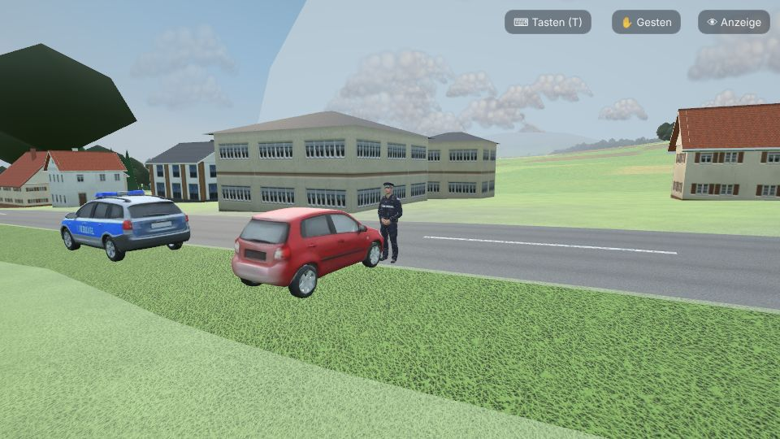
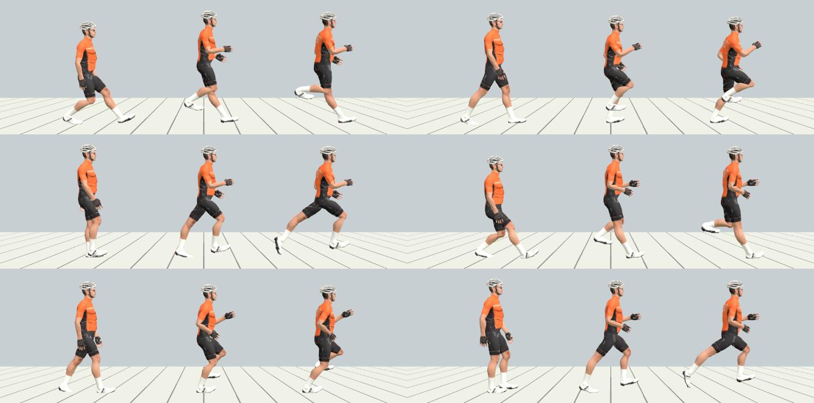

Jetzt zufällig platziert, alles steht sauber auf der Straße, Polizist als Figur mit Skelett

Von links: Spaziergängerin stehend, Läufer beim Gehen, Spaziergängerin beim Gehen, Läufer beim Rennen

Links Gehen 5 km/h, Mitte Joggen 11 km/h, rechts Rennen 19 km/h

